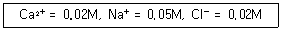
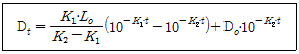
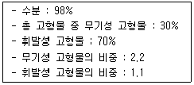
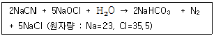
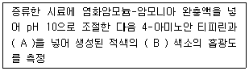
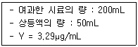
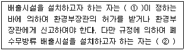

수질환경산업기사 (2008-03-02 기출문제)
1과목: 수질오염개론
1. 다음 중 미생물의 증식 단계를 가장 올바른 순서대로 연결 한 것은?
- 정지기-유도기-대수증식기-사멸기
- 대수증식기-유도기-사멸기-정지기
- 유도기-대수증식기-사멸기-정지기
- 유도기-대수증식기-정지기-사멸기
(정답률: 알수없음)

2. Marson과 Kolkwitz의 하천자정단계 중 심한 악취가 없어지고 수중 저니의 산화(수산화철 형성)로 인해 색이 호전되며 수질도에서 노란색으로 표시하는 수역은?
- 강 부수성 수역(Polysaprobic)
- α-중 부수성 수역(α-mesosaprobic)
- β-중 부수성 수역(β-mesosaprobic)
- 빈 부수성 수역(Oligosaprobic)
(정답률: 40%)
3. 포도당(C6H12O6) 300mg이 탄산가스와 물로 산화하는데 이론적 산소요구량은?
- 300mg
- 320mg
- 340mg
- 360mg
(정답률: 알수없음)
4. 수량 10,000m3/day의 오수를 어떤 하천에 방류하였다. 이 하천은 BOD가 3mg/L이고, 유량이 3,000,000m3/day이며, 방류시킨 오수가 하천수와 완전히 혼합되었을 때 하천의 BOD가 1mg/L 높아졌다고 하면 오수의 BOD 부하량은? (단, 오수와 혼합 이후의 하천의 BOD 절대량에는 변화가 없다고 한다.
- 0.58 ton/day
- 1.52 ton/day
- 2.35 ton/day
- 3.04 ton/day
(정답률: 알수없음)
5. 호기성 Bacteria의 질소함량은? (단, 경험적 호기성 박테리아를 나타내는 화학식 기준)
- 약 4.2%
- 약 8.9%
- 약 12.4%
- 약 18.2%
(정답률: 알수없음)
6. Na+ 184mg/L, Ca2+ 200mg/L, Mg2+ 264mg/L인 농업용수가 있다. 이때 SAR(Sodium Adsorption Ratio)의 값은? (단, Na 원자량 : 23, Ca 원자량 : 40, Mg 원자량 : 24.3)
- 1.0
- 1.5
- 2.0
- 2.5
(정답률: 알수없음)
7. 수중에 H+이온의 농도가 1.0×10-4 mol/L 들어있을 때 OH-이온의 농도는?
- 1.0×10-5mol/L
- 1.0×10-10mol/L
- 2.0×10-5mol/L
- 2.0×10-10mol/L
(정답률: 알수없음)
8. 여름 정체기간 중 호수의 깊이에 따른 CO2와 DO농도의 변화를 설명한 것으로 옳은 것은?
- 표수층에서 CO2농도가 DO 농도보다 높다.
- 심해에서 DO농도는 매우 낮지만 CO2농도는 표수층과 큰 차이가 없다.
- 깊이가 깊어질수록 CO2농도보다 DO농도가 높다.
- CO2농도와 DO 농도가 같은 지점(깊이)이 존재한다.
(정답률: 알수없음)
9. 어느 폐수의 BODu가 250mg/L이며 K1(상용대수) 값이 0.2/day라면 5일 후 남아있는 BOD는?
- 25mg/L
- 85mg/L
- 185mg/L
- 225mg/L
(정답률: 알수없음)
10. 물의 특성을 나타내는 용어와 가장 거리가 먼 것은?
- 유용한 용매
- 수소결합
- 비극성 형성
- 육각형 결정구조
(정답률: 알수없음)
11. Bacteria에 관한 설명으로 잘못된 것은?
- 혐기성 박테리아 경험적 분자식이 C5H9O3N 이다.
- 수분이 80%, 고형물 20%로 구성되어 있다.
- 크기는 80~100μm 정도이다.
- 엽록소가 없어 탄소동화작용을 못한다.
(정답률: 알수없음)
12. 개미산(HCOOH)의 ThOD/TOC의 비는?
- 2.67
- 2.14
- 1.89
- 1.33
(정답률: 알수없음)
13. 1차 반응에 있어 반응 초기의 농도가 100mg/L이고, 4시간 후에 10mg/L로 감소되었다. 반응 1시간 후의 농도(mg/L)는?
- 26.2
- 36.2
- 46.2
- 56.2
(정답률: 알수없음)
14. 하천의 수질이 다음과 같을 때 이 물의 이온강도는?

- 0.⑤5
- 0.065
- 0.075
- 0.085
(정답률: 알수없음)
15. 다음 중 부영양호(eutrophic lake)의 특성으로 가장 알맞은 것은?
- 생산과 소비의 균형
- 낮은 영양 염류
- 조류의 과다발생
- 생물종 다양성 증가
(정답률: 알수없음)
16. Ca2+이온의 농도가 40mg/L, Mg2+이온의 농도가 4.8mg/L인 물의 경도는 몇 mg/L as CaCO3인가? (단, 원자량은 Ca=40, Mg=24이다.)
- 60
- 80
- 100
- 120
(정답률: 알수없음)
17. 25℃, AgCl의 물에 대한 용해도가 1.0 × 10-5M이라면 AgCl에 대한 Ksp(용해도적)는?
- 1.0 × 10-4
- 2.0 × 10-7
- 2.0 × 10-9
- 1.0 × 10-10
(정답률: 알수없음)
18. 다음 그림은 호기성 상태 하에서 폐수에 존재하는 질소 형태 변화이다. 암모니아성 질소는? (문제 오류로 문제 및 보기 내용이 정확하지 않습니다. 정확한 내용을 아시는 분께서는 오류신고를 통하여 내용 작성 부탁드립니다. 정답은 1번입니다.)
- 복원중
- 복원중
- 복원중
- 복원중
(정답률: 알수없음)
19. 아래 식은 DO 부족 곡선식(DO sag curve)이다. 이 식에 대한 설명 중 잘못된 것은?

- K1은 탈산소계수이고 단위는 day-1이다.
- K2는 재포기계수이고 단위는 day-1이다.
- Lo는 방류지점에서의 최종 BOD 농도(mg/L)이다.
- Do는 t가 0일 때의 용존산소 농도(mg/L)이다.
(정답률: 알수없음)
20. 다음의 차원방정식 중 틀린 것은? (단, M : 질량, L : 길이, T : 시간)
- 확산계수 [LT-1]
- 밀도 [ML-3]
- 점성계수[ML-1T-1]
- 유량[L3T-1]
(정답률: 알수없음)
2과목: 수질오염방지기술
21. 혐기성 조건하에서 300g의 C6H12O6(Glucose)로부터 발생가능한 CH4가스의 용적은? (단, 표준상태 기준)
- 101L
- 112L
- 126L
- 146L
(정답률: 알수없음)
22. 진공여과기로 슬러지를 탈수하여 함수율 78%의 탈수 cake을 얻었다. 여과면적은 60m2, 여과속도는 25kg/m2ㆍhr이라면 진공여과기의 시간당 cake의 생산량은? (단, 슬러지 비중은 1.0으로 가정한다.)
- 약 5.4 m3
- 약 5.8 m3
- 약 6.4 m3
- 약 6.8 m3
(정답률: 알수없음)
23. 'Symbiosis'에 관한 설명으로 가장 알맞는 것은?
- 호기성 미생물의 이화작용, 동화작용에 의한 물질대사관계
- 폐수와 미생물막의 물질이전관계
- 호기성 박테리아와 혐기성 박테리아의 배양환경조건
- 박테리아와 조류간의 공생작용관계
(정답률: 알수없음)
24. 2700m3/day의 폐수처리를 위해 폭 5m, 길이 15m, 깊이 3m인 침전지(유효수심이 2.7m)를 사용하고 있다면 침전된 슬러지가 바닥에서 유효수심의 1/5이 찬 경우 침전지의 수평유속은?
- 약 0.17 m/min
- 약 0.42 m/min
- 약 0.82 m/min
- 약 1.23 m/min
(정답률: 알수없음)
25. 상수도 소독제인 차아염소산나트륨에 관한 설명으로 틀린 것은?
- 유효염소농도가 40∼50% 정도이다.
- 액화염소에 비하여 안정성과 취급성이 좋다.
- 담황색 액체로 알칼리성이 강하다.
- 저장 중에 유효염소가 감소된다.
(정답률: 알수없음)
26. 고형물 농도 80kg/m3의 농축 sludge를 1시간당 5m3씩 탈수하고자 한다. 농축 sludge 중의 고형물 당 소석회를 15%(중량)첨가하여 탈수 시험한 결과, 함수율 75%(중량)의 탈수 cake가 얻어졌다. 실험과 같은 조건으로 탈수한 경우 탈수 cake의 발생량은? (단, 비중은 1.0 기준)
- 1.12 ton/hr
- 1.32 ton/hr
- 1.84 ton/hr
- 1.98 ton/hr
(정답률: 알수없음)
27. 어느 특정한 산화지에 대해 1일 BOD부하를 20kg/dayㆍm2으로 설계하였다. 평균 유량이 3m3/min이고 BOD농도가 300mg/L일 때 필요한 면적(m2)은? (단, 비중은 1.0으로 가정함)
- 32.5
- 42.4
- 56.2
- 64.8
(정답률: 알수없음)
28. '인'을 주로 제거하기 위한 생물학적 고도처리공법으로 가장 적절한 것은?
- 3단계 Bardenpho
- RBC
- 4단계 Bardenpho
- A/O
(정답률: 알수없음)
29. 활성슬러지법으로 운전되는 하수처리장에서 SVI 100일 때 포기조내의 MLSS 농도를 2500mg/L로 유지하기 위한 슬러지 반송률은? (단, 유입수의 SS 농도는 무시한다.)
- 20.0%
- 25.5%
- 29.2%
- 33.3%
(정답률: 알수없음)
30. BOD 200mg/L인 폐수 104m3/day를 활성슬러지법으로 처리하고자 한다. MLSS 농도 2000mg/L, F/M비 0.4kgㆍBOD/kgㆍMLSSㆍday인 조건으로 처리하면 포기조의 필요 부피는?
- 800 m3
- 1,600 m3
- 2,500 m3
- 3,300 m3
(정답률: 알수없음)
31. 1일 2270m3를 처리하는 1차 처리시설에서 생 슬러지를 분석한 결과 다음과 같은 자료를 얻었다. 이 슬러지의 비중은?

- 1.0⑤
- 1.015
- 1.022
- 1.029
(정답률: 알수없음)
32. 하루 5,000m3 폐수를 처리할 수 있는 폭기조를 시공하고자 한다. 폭기조 내 산기관 1개당 300L/min의 공기를 공급할 때 필요한 산기관 개수는? (단, 폭기조 용적 당 공기 공급량은 3.0m3/m3ㆍhr, 폭기조 체류시간 18hr이다.)
- 335
- 417
- 571
- 625
(정답률: 알수없음)
33. 생물학적 질산화에 대한 설명으로 틀린 것은?
- 질산화는 자가영양의 생물학적 과정이다.
- 암모니아성 질소의 질산화는 Nitrosomonas와 Notrobacter 미생물이 관여하여 2단계로 진행된다.
- 질산화 미생물은 유기탄소보다 무기탄소를 새로운 세포 합성에 이용한다.
- 질산화과정은 호기성과 무산소조건에서 미생물에 의한 과잉 흡수와 방출을 통해 진행된다.
(정답률: 알수없음)
34. 어떤 공장에서 배출되는 시안 폐수를 알칼리 염소 주입법으로 처리하고자 한다. 이때 CN- 이 300mg/L, 유량이 200m3/day이라면 NaOCl의 1일 소요량은?

- 약 360kg
- 약 430kg
- 약 540kg
- 약 620kg
(정답률: 알수없음)
35. 보통 음이온 교환수지에 대해서 가장 일반적인 음이온의 선택성 순서로 알맞는 것은?
- CrO42- ＞ SO42- ＞ I- ＞ Br- ＞ NO3-
- CrO42- ＞ SO42- ＞ I- ＞ NO3- ＞ Br-
- SO42- ＞ I- ＞ NO3- ＞ CrO42- ＞ Br-
- SO42- ＞ CrO42- ＞ NO3- ＞ Br- ＞ I-
(정답률: 알수없음)
36. 다음의 하수처리 공정 중 유입 하수의 유기물을 이용하여 생물학적으로 질소를 제거할 때 가장 효과적인 것은? (문제 오류로 문제 및 보기 내용이 정확하지 않습니다. 정확한 내용을 아시는 분께서는 오류신고를 통하여 내용 작성 부탁드립니다. 정답은 2번입니다.)
- 복원중
- 복원중
- 복원중
- 복원중
(정답률: 알수없음)
37. 생물학적 탈질화 공정에 대한 설명으로 틀린 것은?
- 아질산이온, 질산이온 등이 질소가스로 변환되어 대기로 방출되는 공정이다.
- 생물학적 탈질공정은 anoxic 구역에서 Pseudomonas, Micrococcus 등에 의해서 이루어진다.
- 독립영양균에 의한 반응이며 탈질로 인하여 pH가 저하된다.
- 탈질화 공정에서 용존산소의 농도는 주요 변수이다.
(정답률: 알수없음)
38. 활성슬러지 공법으로 100m3/day의 폐수를 처리한다. 포기조 용적이 20m3, 포기조 내 MLSS가 2000mg/L로 유지된다. 처리수로 유실되는 SS농도는 평균 20mg/L, 폐기시키는 슬러지의 양은 1m3/day이며 폐기되는 슬러지의 SS 농도가 1%라면 미생물 체류시간은?
- 약 1.8일
- 약 2.5일
- 약 3.3일
- 약 4.5일
(정답률: 알수없음)
39. 생물학적 질소와 인 제거공정의 설계조건에서 2차 침전지와 슬러지 반송을 생략할 수 있는 처리공정으로 가장 적합한 것은?
- A/O 공정
- A2/O 공정
- UCT 공정
- SBR 공정
(정답률: 알수없음)
40. 슬러지의 함수율이 95%에서 75%로 줄어들면 슬러지의 부피는? (단, 슬러지 비중은 1.0)
- 1/9로 감소한다.
- 1/6로 감소한다.
- 1/5로 감소한다.
- 1/4로 감소한다.
(정답률: 알수없음)
3과목: 수질오염공정시험방법
41. 다음 측정항목 중 시료의 최대보존기간이 가장 짧은 것은?
- 시안
- 6가 크롬
- 부유물질
- 색도
(정답률: 알수없음)
42. 가스크로마토 그래피법으로 PCB를 정량할 때 다음 항목 중 옳지 않은 것은?
- 유효측정농도 : 0.00⑤ mg/L 이상
- 검출기 : 전자 포획형 검출기 (ECD)
- 캐리어가스 : 질소 또는 헬륨(99.9% 이상)
- 시료주입구 온도 : 500℃ 이상
(정답률: 알수없음)
43. 이온크로마토그래피의 일반적인 시료주입량과 주입방식으로 맞는 것은?
- 2~10μL, 루우프-밸브에 의한 주입방식
- 10~50μL, 분무기에 의한 주입방식
- 50~100μL, 루우프-밸브에 의한 주입방식
- 100~250μL, 분무기에 의한 주입방식
(정답률: 알수없음)
44. 가스크로마토그래피법의 분배형 충전물질인 정지상(stationary phase)액체에 관한 내용으로 틀린 것은?
- 분석대상 성분을 완전히 분리할 수 있는 것이어야 한다.
- 사용온도에서 증기압이 높은 것이어야 한다.
- 사용온도에서 점성이 작은 것이어야 한다.
- '진공용 그리스'는 탄화수소계 정지상 액체이다.
(정답률: 알수없음)
45. 수질오염공정시험방법에 적용되고 있는 용어 설명 중 맞는 것은?
- 진공이라 함은 따로 규정이 없는 한 15mmH2O 이하를 말한다.
- 방울수는 정제수 10방울 적하시 부피가 약 1mL가 되는 것을 뜻한다.
- 항량이란 1시간 더 건조하거나 또는 강열할 때 전후 차가 g당 0.1mg 이하일 때를 말한다.
- 온수는 60~70℃, 냉수는 15℃ 이하를 말한다.
(정답률: 알수없음)
46. 개수로의 평균 단면적이 0.8m2이고, 부표를 사용하여 10m 구간을 흐르는데 걸리는 시간을 측정한 결과 5초(sec)였을 때 이 수로의 유량은? (단, 수로의 구성, 재질, 수로단면의 형상, 기울기 등이 일정하지 않은 개수로의 경우 기준)
- 58 m3/min
- 72 m3/min
- 96 m3/min
- 116 m3/min
(정답률: 알수없음)
47. 아연의 정량법인 진콘법에서 2가 망간이 공존하지 않는 경우에 넣지 않는 시약은?
- 포수클로랄
- 염화제일주석
- 디에틸디티오카르바민산
- 아스코르빈산나트륨
(정답률: 알수없음)
48. 시료의 채취량은 시험항목 및 시험회수에 따라 차이가 있으나 일반적으로 어느 정도가 적당한가?
- 1~2 L
- 2~3 L
- 3~5 L
- 5~7 L
(정답률: 알수없음)
49. 가스크로마토그래프 분석에 사용되는 검출기 중 니트로화합물, 유기금속 화합물, 유기할로겐 화합물을 선택적으로 검출하는데 가장 알맞는 것은?
- 열전도도검출기
- 전자포획형검출기
- 염광광도형검출기
- 알칼리열이온화검출기
(정답률: 알수없음)
50. 다음 생물화학적 산소요구량 측정방법 중 시료의 전처리에 관한 설명으로 틀린 것은?
- pH가 6.5 ~ 8.5의 범위를 벗어나는 시료는 염산(1+11) 또는 4% 수산화나트륨용액으로 시료를 중화하여 pH 7로 한다.
- 시료는 시험하기 바로 전에 온도를 20±1℃로 조정한다.
- 수온이 20℃ 이하이거나 20℃일 때 용존산소가 과포화된 시료는 수온을 23 ~ 25℃로 하여 15분간 통기하고 방냉하여 수온을 20℃로 한다.
- 잔류염소가 함유된 시료는 시료 100mL에 아지드화나트륨 0.1g과 요오드화칼륨 1g을 넣고 흔들어 섞은 다음 수산화나트륨을 넣어 알칼리성으로 한다.
(정답률: 알수없음)
51. 페놀류의 흡광광도법 측정원리이다. 다음 빈칸에 맞는 내용은?

- A : 클로로포름, B : 아미노계
- A : 페리시안칼륨, B : 안티피린계
- A : 초산이나트륨, B : 아미노계
- A : 클로로포름, B : 안티피린계
(정답률: 알수없음)
52. 다음 중 수소이온농도 측정을 위한 pH 표준액으로 모두 맞는 것은?
- 붕산염 표준액(0.01M), 수산염 표준액(0.⑤M), 프탈산염 표준액(0.⑤M)
- 수산화나트륨 표준액(0.02M), 붕산염 표준액(0.01M), 인산염 표준액(0.025M)
- 인산염 표준액(0.025M), 수산화칼륨 표준액(0.01M), 붕산염 표준액(0.01M)
- 프탈산염 표준액(0.⑤M), 인산염 표준액(0.025M), 탄산칼슘 표준액(0.02M)
(정답률: 알수없음)
53. 다음 총인의 측정법 중 아스코르빈산 환원법에 관한 설명 중 맞는 것은?
- 220nm에서 시료용액의 흡광도를 측정한다.
- 다량의 유기물을 함유한 시료는 과황산칼륨 분해법을 사용하여 전처리한다.
- 전처리한 시료의 상등액이 탁할 경우에는 염산 주입 후 가열한다.
- 정량범위는 0.001~0.025mgㆍP이며, 표준편차는 10~2%이다.
(정답률: 알수없음)
54. 분원성 대장균군의 막여과 시험방법의 측정에 관한 내용으로 틀린 것은?
- 여과시료가 1mL 이하인 경우에는 멸균된 희석수를 사용하여 적당히 희석한 후 여과한다.
- 배지에 배양시킬 때 분원성 대장균군은 여러가지 색조를 띠는 붉은 색의 집락을 형성한다.
- 집락수를 계수하여 분원성 대장균군수/100mL 단위로 표시한다.
- 다량의 시료를 여과할 수 있고, 실험기간이 최적확수 시험법보다 단축된다.
(정답률: 알수없음)
55. 수질오염공정시험방법에서 부유물질측정시(유리섬유 거름종이법)의 정량범위 기준은?
- 5mg 이상
- 25mg 이상
- 50mg 이상
- 250mg 이상
(정답률: 알수없음)
56. 측정항목-시료용기-보존방법이 맞는 것은?
- 용존 총질소 - 폴리에틸렌 또는 유리 용기 - 4℃, H2SO4로 pH 2 이하
- 음이온 계면활성제 - 폴리에틸렌 - 4℃, H2SO4로 pH 2 이하
- 인산염 인 - 유리용기 - 즉시 여과한 후 4℃, CuSO4 1g/L 첨가
- 질산성 질소 - 폴리에틸렌 또는 유리용기 - 4℃ NaOH로 pH 12 이상
(정답률: 알수없음)
57. 다음 조건에서 클로로필-a 량은?

- 125.5 mg/m3
- 411.2 mg/m3
- 822.5 mg/m3
- 2,706.0 mg/m3
(정답률: 알수없음)
58. 유도결합플라즈마(ICP)발광광도 분석장치의 구성이 옳게 된 것은?
- 시료주입부, 고주파전원부, 광원부, 분광부, 연산처리부 및 기록부
- 시료주입부, 시료원자화부, 분리부, 검출부, 측광부, 연산처리부 및 기록부
- 시료주입부, 저주파전원부, 분광부, 단색화부, 검출부, 연산처리부 및 기록부
- 시료주입부, 광원부, 분리부, 측광부, 단색화부, 연산처리부 및 기록부
(정답률: 알수없음)
59. 자기식 유량측정기(Magnetic flow meter)의 설명으로 틀린 것은?
- 고형물이 많아 관을 메울 우려가 있는 폐하수에 이용한다.
- 측정원리는 패러데이(Faraday)의 법칙이다.
- 자장의 직각에서 전도체를 이동시킬 때 유발되는 전압은 전도체의 속도에 비례한다는 원리를 이용한다.
- 유체(폐하수)의 유속에 의하여 유량이 결정되므로 수두손실이 크다.
(정답률: 알수없음)
60. pH 측정시 pH 미터기의 조작에 관한 내용으로 틀린 것은?
- pH meter는 전원을 넣어 5분 이상 경과 후에 쓴다.
- pH meter의 재현성은 ±0.1 이내인 것을 사용하여야 한다.
- pH 11 이상의 시료는 오차가 크므로 알칼리에서 오차가 적은 특수전극을 쓰고 필요한 보정을 한다.
- pH meter의 지시부는 비대칭 전위조절용 꼭지 및 온도 보상용 꼭지가 있다.
(정답률: 알수없음)
4과목: 수질환경관계법규
61. 다음의 ( )안에 알맞는 내용은?

- ① 환경부령, ② 환경부장관의 허가를 받아야 한다.
- ① 대통령령, ② 환경부장관의 허가를 받아야 한다.
- ① 환경부령, ② 환경부장관에게 신고하여야 한다.
- ① 대통령령, ② 환경부장관에게 신고하여야 한다.
(정답률: 알수없음)
62. 수질 및 수생태계 정책심의위원회에 관한 설명으로 틀린 것은?
- 수질 및 수생태계와 관련된 측정, 조사에 관한 사항을 심의한다.
- 환경부장관을 위원장으로 한다.
- 위원회의 운영 등에 관하여 필요한 사항은 대통령령으로 정한다.
- 위원회는 위원장과 부위원장을 포함하여 10인 이내로 구성한다.
(정답률: 알수없음)
63. 사업장의 규모별 구분(종별)기준으로 맞는 것은?
- 제 1종 사업장 : 1일 폐수발생량이 3,000m3 이상인 사업장
- 제 2종 사업장 : 1일 폐수발생량이 1,000m3 이상, 2,000m3 미만인 사업장
- 제 3종 사업장 : 1일 폐수발생량이 200m3 이상, 500m3 미만인 사업장
- 제 4종 사업장 : 1일 폐수발생량이 50m3 이상, 200m3 미만인 사업장
(정답률: 알수없음)
64. 비점오염저감시설 중 장치형 시설이 아닌 것은?
- 침투형 시설
- 와류형 시설
- 여과형 시설
- 생물학적 처리형 시설
(정답률: 알수없음)
65. 수질오염 방지시설 중 화학적 처리시설은?
- 응집시설
- 흡착시설
- 폭기시설
- 접촉조
(정답률: 알수없음)
66. 낚시제한구역에서 과태료 대상이 되는 행위라 볼 수 없는 것은?
- 낚시 바늘에 떡밥 또는 어분을 끼워 사용하는 행위
- 1명당 4대 이상의 낚시대를 사용하는 행위
- 1개의 낚시대에 5개 이상의 낚시바늘을 떡밥과 뭉쳐서 미끼로 던지는 행위
- 어선을 이용한 낚시행위 등 낚시어선업법에 따른 낚시어선업을 영위하는 행위
(정답률: 알수없음)
67. '오염총량관리기본방침'에 포함될 사항과 가장 거리가 먼 것은?
- 오염총량관리지역 지정, 고시 기준
- 오염원의 조사 및 오염부하량 산정방법
- 오염총량관리의 대상 수질오염물질 종류
- 오염총량관리의 목표
(정답률: 알수없음)
68. 조업정지처분에 갈음하여 부과할 수 있는 과징금의 최대액수는?
- 1억원
- 2억원
- 3억원
- 5억원
(정답률: 알수없음)
69. 초과배출부과금 부과대상 수질오염물질의 종류가 아닌 것은?
- 아연 및 그 화합물
- 벤젠
- 페놀류
- 트리클로로에틸렌
(정답률: 알수없음)
70. 특정수질유해물질이 아닌 것은?
- 셀레늄과 그 화합물
- 구리와 그 화합물
- 바륨과 그 화합물
- 클로로폼
(정답률: 알수없음)
71. '오염총량관리기본계획'에 포함되어야 할 사항과 거리가 먼 것은?
- 당해 지역 개발계획의 내용
- 지방자치단체별, 수계구간별 저감시설 현황
- 관할 지역에서 배출되는 오염부하량의 총량 및 저감계획
- 당해 지역 개발계획으로 인하여 추가로 배출되는 오염부하량 및 그 저감계획
(정답률: 알수없음)
72. 폐수종말처리시설의 방류수 수질기준으로 틀린 것은? (단, 적용기간 2008.1.1부터 2010.12.31까지이며 ( ) 안의 기준은 농공단지의 경우의 기준이다.)
- 부유물질량 : 20(30)mg/L 이하
- 총인 : 4(8)mg/L 이하
- 화학적 산소요구량 : 30(40)mg/L 이하
- 총질소 : 40(60)mg/L 이하
(정답률: 알수없음)
73. 환경부장관은 대권역별로 수질 및 수생태계 보전을 위한 기본계획을 몇 년마다 수립하여야 하는가?
- 1년
- 3년
- 5년
- 10년
(정답률: 알수없음)
74. 수질 및 수생태계 환경기준 중 하천의 경우 등급이 '보통(Ⅲ)'인 생활환경 기준으로 틀린 것은?
- pH : 6.5 ~ 8.5
- 부유물질량(mg/L) : 50 이하
- 총대장균군(군수/100mL) : 5000 이하
- 분원성대장균군(군수/100mL) : 1000이하
(정답률: 알수없음)
75. 폐수무방류배출시설의 설치허가 또는 변경허가를 받은 사업자가 폐수무방류배출시설에서 배출되는 폐수를 재이용하는 경우 동일한 폐수무방류배출시설에서 재이용하지 아니하고 다른 배출시설에서 재이용하거나 화장실용수, 조경용수, 또는 소방용수 등으로 사용할 때의 벌칙기준은?
- 7년 이하의 징역 또는 5천만원 이하의 벌금
- 5년 이하의 징역 또는 3천만원 이하의 벌금
- 3년 이하의 징역 또는 2천만원 이하의 벌금
- 2년 이하의 징역 또는 1천만원 이하의 벌금
(정답률: 알수없음)
76. 법 용어에 관한 정의로 알맞지 않은 것은?
- 폐수 : 물에 액체성 또는 고체성의 수질오염물질이 혼입되어 그대로 사용할 수 없는 물을 말한다.
- 비점오염원 : 환경부령으로 정하는 불특정 장소에서 수질오염물질이 배출하는 배출원을 말한다.
- 수질오염물질 : 수질오염의 요인이 되는 물질로서 환경부령으로 정하는 것을 말한다.
- 강우유출수 : 비점오염원의 수질오염물질이 섞여 유출되는 빗물 또는 눈녹은 물 등을 말한다.
(정답률: 알수없음)
77. 다음의 위임업무보고사항 중 보고횟수가 연 4회에 해당되는 것은?
- 비점오염원의 설치신고 및 방지시설 설치 현황 및 행정처분 현황
- 폐수처리업에 대한 등록, 지도단속실적 및 처리실적 현황
- 폐수무방류배출시설의 설치허가(변경허가)현황
- 배출업소 등에 의한 수질오염사고 발생 및 조치사항
(정답률: 알수없음)
78. 환경기술인을 임명하지 아니하거나 임명(바꾸어 임명하는 것을 포함한다)에 대한 신고를 하지 아니한 자에 대한 과태료 처분기준으로 맞는 것은?
- 1천만원 이하
- 5백만원 이하
- 3백만원 이하
- 2백만원 이하
(정답률: 알수없음)
79. 폐수처리업에 종사하는 기술요원의 교육기관으로 맞는 것은?
- 국립환경인력개발원
- 환경보전협회
- 국립환경과학원
- 환경기술인협회
(정답률: 알수없음)
80. 배출시설의 설치제한지역에서 폐수무방류배출시설의 설치가 가능한 특정수질유해물질이 아닌 것은?
- 구리 및 그 화합물
- 디클로로메탄
- 1,2-디클로로에탄
- 1,1-디클로로에틸렌
(정답률: 알수없음)
미생물의 증식 단계는 크게 유도기, 대수증식기, 정지기, 사멸기로 나눌 수 있습니다.
유도기는 미생물이 적절한 환경을 찾아 증식하기 위해 준비하는 단계입니다. 이후 대수증식기에서는 미생물이 지수적으로 증식하게 됩니다.
그러나 적절한 환경이 유지되지 않으면 미생물은 정지기로 진입하게 됩니다. 정지기에서는 미생물이 증식하지 않고 생존만을 유지합니다.
마지막으로, 환경이 더 이상 적절하지 않아 미생물이 사멸하기 시작하면 사멸기로 진입하게 됩니다.
따라서, 올바른 순서는 유도기-대수증식기-정지기-사멸기 입니다.